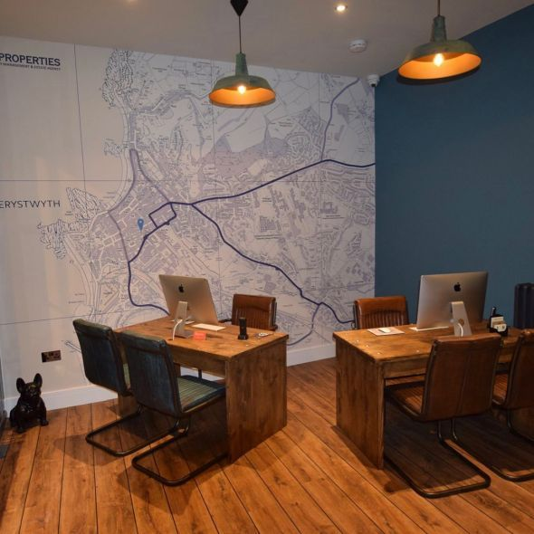
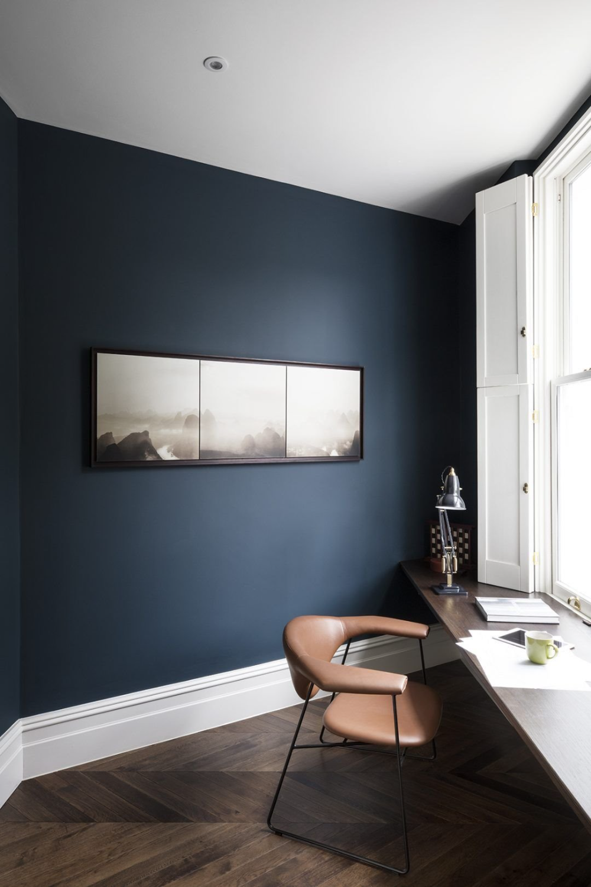

<section class="u-section-5">
  <div class="u-sheet-1">
    <div class="u-layout-wrap-1">
      <div class="u-layout">
        <div class="u-layout-col">

            <div class=" u-container-layout-1">
              <h1 class="u-text-1">DICEÑO PARA OFICINA</h1>
              <p class="u-text-2">Se acabaron las oficinas tristes y monótonas. La tendencia que viene marca que nuestras oficinas reflejen personalidad, carácter y creatividad. En las paredes encontramos otra forma de motivar a nuestro personal y a la vez de ofrecer una imagen actual e única que resulte atractiva  para nuestros clientes y proveedores. Para que trabajar en ellas resulte más placentero, ¿así a quién no le apetece ir a la oficina?</p>
            </div>

            <div class="u-container-layout">
              
            </div>

            <div class="u-container-layout u-valign-bottom-xs">
              
               <h1 class="u-text-4">LA MADERA CONQUISTA LA OFICINA</h1>
              <p class="u-text-3">La oficina tampoco se resiste a la invasión de la madera y la decoración más natural inspirada en la naturaleza. Suelos, techos y por supuesto paredes se recubren de madera para aportar calidez y sensación de comfort. Y además puede quedar así de decorativo.
              Una idea que sin duda llega para quedarse y que seguiremos viendo mucho en próximas temporadas, ya sea en forma de madera reciclada como palets o tableros osd o imitaciones de madera. Ya lo hemos visto en los muebles de oficina donde vuelven las vetas marcadas que nos recuerdan a la auténtica madera.
              </p>
            </div>

        </div>
      </div>
    </div>
  </div>
</section>
